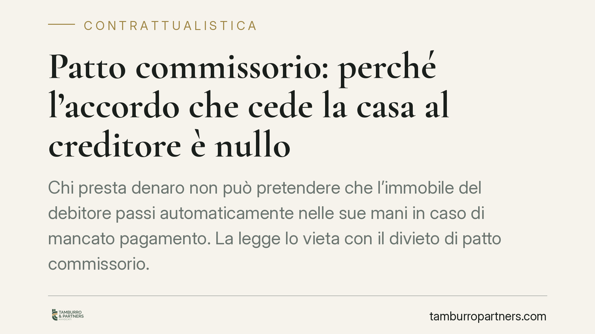

Patto commissorio: perché l'accordo che cede la casa al creditore è nullo
Chi presta denaro non può pretendere che l'immobile del debitore passi automaticamente nelle sue mani in caso di mancato pagamento. La legge lo vieta con il divieto di patto commissorio. Un principio antico, ma ancora al centro di controversie recenti davanti ai tribunali calabresi. Vediamo perché e cosa comporta per chi firma certi accordi.

Il fatto e perché conta
Capita più spesso di quanto si pensi. Un debitore in difficoltà accetta di firmare un accordo con il creditore: se non paga entro una certa data, la proprietà della sua casa passerà a quest'ultimo. L'operazione sembra risolvere il problema in modo rapido. In realtà è una trappola giuridica.
Questo tipo di accordo si chiama patto commissorio ed è nullo per legge. Vuol dire che non produce alcun effetto: il trasferimento della proprietà non avviene, anche se le parti lo hanno messo nero su bianco e sottoscritto davanti a un notaio.
Inquadramento normativo
La regola è contenuta nell'articolo 2744 del Codice civile, che dichiara nullo il patto con cui si conviene che, in mancanza del pagamento del credito nel termine fissato, la proprietà della cosa ipotecata o data in pegno passi al creditore.
Lo stesso principio è ribadito, in materia di anticresi, dall'articolo 1963 del Codice civile. L'anticresi è il contratto con cui il debitore consegna un immobile al creditore perché ne percepisca i frutti a scomputo del debito: anche qui è vietato pattuire il passaggio automatico della proprietà.
La ragione del divieto è duplice. Da un lato, si vuole evitare che il creditore approfitti dello stato di bisogno del debitore per ottenere un bene di valore molto superiore al credito. Dall'altro, si tutela la corretta distribuzione tra tutti i creditori: nessuno può assicurarsi in anticipo un bene sottraendolo alla garanzia comune.
La giurisprudenza recente, con pronunce della Cassazione e di diversi tribunali di merito – tra cui Catanzaro, Cosenza e Reggio Calabria – ha confermato un orientamento consolidato: il divieto colpisce non solo la forma esplicita del patto, ma anche gli schemi negoziali che ne mascherano la sostanza.
Le operazioni "camuffate"
È qui che si concentra il contenzioso. Il divieto non si aggira cambiando etichetta al contratto.
Un esempio tipico è la vendita con patto di riscatto usata come garanzia: il debitore "vende" la casa al creditore riservandosi di ricomprarla restituendo il denaro. Se la funzione reale dell'operazione è garantire un debito, e la proprietà si consolida in capo al creditore in caso di mancata restituzione, il giudice può dichiararla nulla per violazione del divieto di patto commissorio.
Lo stesso vale per la vendita sospensivamente condizionata all'inadempimento o per intestazioni fiduciarie costruite con la medesima logica. Ciò che conta non è il nome dato al contratto, ma lo scopo concreto perseguito.
Cosa cambia per debitore e creditore
Per il debitore, il divieto è una tutela. Anche dopo aver firmato, può contestare la validità dell'accordo e conservare la proprietà dell'immobile. Resta però obbligato a pagare il debito: la nullità del patto non cancella il credito sottostante.
Per il creditore, il messaggio è chiaro: contare su un trasferimento automatico dell'immobile significa costruire una garanzia inefficace. Il rischio è duplice: perdere la garanzia e non recuperare comunque il credito nei modi corretti.
Esiste un'alternativa lecita, introdotta dal legislatore: il patto marciano. In questo schema, in caso di inadempimento il bene può essere trasferito o venduto, ma con una stima del valore e l'obbligo di restituire al debitore l'eventuale eccedenza rispetto al debito. È l'equilibrio che il patto commissorio, invece, non garantisce.
Cosa fare in concreto
- Non firmate accordi che prevedano il passaggio automatico dell'immobile al creditore in caso di mancato pagamento: sono nulli e vi espongono a contenzioso.
- Fate esaminare il testo di ogni contratto di garanzia da un professionista prima della sottoscrizione, soprattutto se compaiono vendite con riscatto o condizioni sospensive.
- Verificate se un'operazione già conclusa nasconde in realtà un patto commissorio: la nullità può essere fatta valere in giudizio.
- Valutate, come creditori, strumenti leciti di garanzia – tra cui il patto marciano – che prevedano stima del bene e restituzione dell'eccedenza.
- Agite per tempo: in situazioni di difficoltà economica, consigliamo di considerare le procedure di composizione della crisi prima di accettare soluzioni pregiudizievoli.
Disclaimer
Contributo informativo a cura di Tamburro & Partners - Avv. Giuseppe Tamburro. Non costituisce parere legale.
Ogni contratto ha il suo equilibrio.
Se vuoi una revisione delle clausole o una redazione su misura, scrivi allo studio. Ti rispondiamo entro un giorno lavorativo.